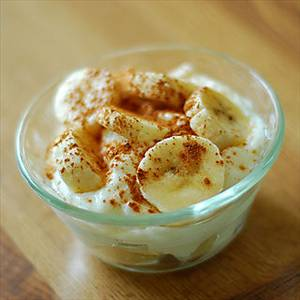

Yogurt with Banana

Description
An even simpler recipe. Greek yogurt with sliced banana, topped with cinnamon.
Ingredients
- Greek Yogurt (I've tried both plain and vanilla and enjoyed both)
- Banana
- Powdered Cinnamon
Steps
- Put greek yogurt in a bowl.
- Slice banana into the bowl.
- Top with cinnamon powder. Go light at first -
it's easy to add more,
but difficult to take it out once it's there!
Home